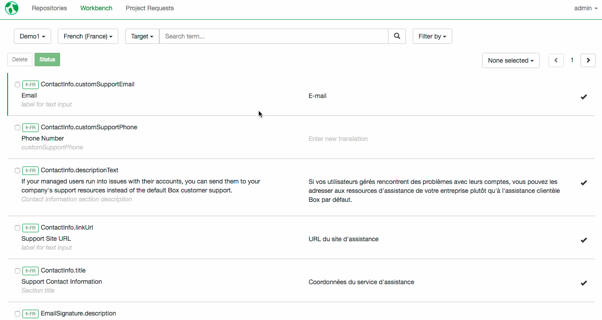

Workbench
Workbench in mojito is a place where you can search and edit all of your text units—across all products and languages!
Use Workbench to fix bugs, communicate context to translation teams and manage global terminology changes. Translators and reviewers can also work directly in Workbench.
Searching

- Select the repositories you’d like to search. You can bulk-select and unselect repositories:
All- selects all repositories in mojitoNone- clears all selections
- Select the locales you’d like to search. You can bulk-select and unselect locales:
To be fully translated- selects all locales that are being included in regular project requests.All- selects all locales in the projectNone- clears all selections
- Select the attribute you would like to search
Id- search by the string identifierSource- search by the contents of the original stringTarget- search by the contents of the translation
- Select the type of search
Exact- the results will match exactly what you entered in the search fieldContains- the results will contain what you entered in the search field (including exact matches)iLike- the results will contain strings that match the pattern of what you entered in the search field
- Tell mojito what you are searching for
- You can apply filters to narrow your search results. You can filter by text unit’s status and by presence in products.
- Filter by status
All- includes all text units regardless of their statusTranslated- includes all text units that have a translationNeeds translation- includes all text units with no translation and all text units marked asneeds translationNeeds review- includes all text units marked as ‘needs review’Rejected- includes text units marked ‘rejected’
- Filter by presence in product
Used- includes text units that are still used in your productsUnused- includes legacy text units that have been removed from product or modified
- Filter by status
Managing text units
Add or change translations

To add or edit a translation, select the text unit you would like to edit. Then click on Add new translation or on the existing translation. Enter a new translation and hit Save.
Warning! Every time you add or edit a translation through workbench, it is marked as final. If you want the translation to go through additional workflow steps, you need to mark it for translation or for review.
Request translation for a text unit
By default, all new text units are set to be included in your next translation project. If you want to mark a previously translated text unit to be re-translated, you can do two things.
Remove current translation and send the text unit for retranslation

Select the text unit in the workbench and click Delete. mojito will delete the text unit with existing translation and create a new text unit without translation.
Warning! Do not remove translation from the translation field. If you do so, your product will show an empty string instead of the English string.
Keep current translation but send the text unit for retranslation

Select the text unit in the workbench and click Status. In the Status pop-up, select Needs translation.
You can also leave a comment on the text unit to let translators know, to what they should pay particular attention.
When you are done, click Save. The text unit will be included in your next translation project.
Mark strings for review

If you have a review step in your translation workflow, you will want to export a review project. Only text units that are marked as needs review will be included in your review project.
To mark a text unit for review, select it in the workbench and click on Status. Select Needs review.
You can also leave a comment on the text unit to let reviewers know, to what they should pay particular attention.
When you are done, click Save. The text unit will be included in your next review project.
Mark strings as final

When you are happy with your text unit, you can mark it as final. To mark a text unit as final, select it in the workbench and click on Status. Select Accepted. When you are done, click Save. Final text units will not get included into any translation or review projects. If you change your mind later, you can always mark the unit to be included into translation or review projects (see points 2 and 3).
Bulk-managing text units

Making global changes to strings is made easy. mojito allows you to select multiple strings across pages. Additionally, you can also select all strings on a particular page. To do so, click on the selection dropdown. Then click on Select all in page.
If you want to clear all selections on a particular page, click on Clear all in page. All selections on the page will be cleared. Your selections on other pages will be preserved.
If you need to clear all selections across all pages, click on Clear all.